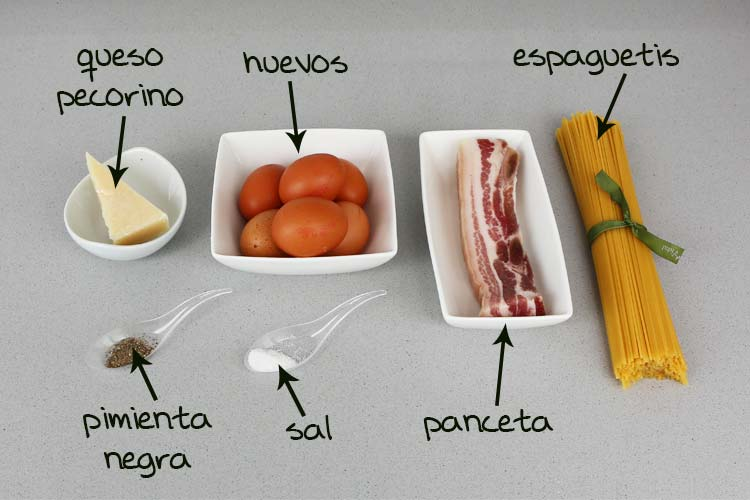

Pasta carbonara
Ingredientes
- spaguetis
- bacon
- queso
- nata(salsa carbonara)
Cantidad
| Ingredientes |
Cantidad para 1 persona |
Cantidad para 4 peronas |
| spaguetis |
80-100 gramos |
350-400 gramos |
| bacon |
40-50 gramos |
150-200 gramos |
| queso |
50-100 gramos |
200-400 gramos |
| nata(salsa carbonara) |
100 gramos |
400 gramos |
Ingredientes para la salsa casera
- Yema de huevo
- queso parmesano
- piento negro y especies
Cantidad
| Ingredientes |
Cantidad 1 persona |
Cantidad 4 personas |
| Yema de huevos |
2 |
8 |
| queso parmesano |
50 gramos |
200 gramos |
| pimiento y especies |
al gusto |
al gusto |
